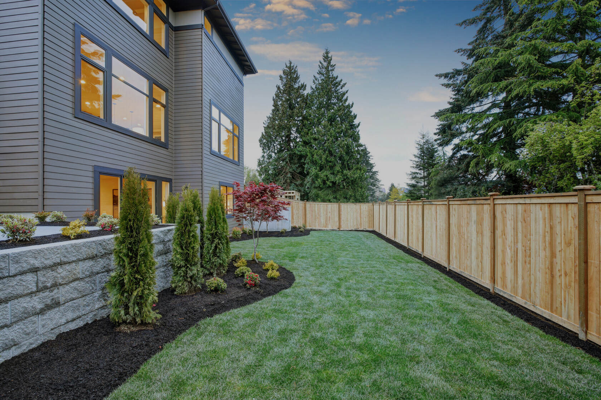

Home / About
About Johnson's Fence Company
We install and repair fences in Johnson City and nearby towns. You call, we come to the property, and you get a number for that line.

What we take on
Wood, vinyl, aluminum, chain link, ornamental metal, picket, privacy, farm, and commercial fence, plus gates and repairs. A backyard screen, a front-yard picket, a dog run, a shop yard, and a pasture line are all work we price. They are not the same product.
There is no public storefront listed. Estimates are done on the lot. The phone number is (423) 468-2697.
How we work a Johnson City lot
The valley ground is often clay that holds water. Ridges toward Unicoi and Buffalo Mountain can turn up rock. Summers are humid, and winters freeze and thaw, which is hard on a post set too shallow and on wood left bare at the ground line. Inside the city, a standard residential fence can go to 7 feet without a structural permit, and a corner sight triangle stays at 3 feet. A parcel outside the city is not automatically under that rule.
If the posts on an old line are sound, we repair. If they have failed, we say so. The materials we install are the ones on the services pages, matched to the job.